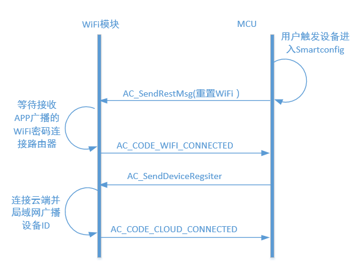

设备激活
在设备管理部分，设备首先需要实现的功能是设备激活。设备激活以后，才能够进行绑定、控制等操作。
WiFI设备
需要提交到AbleCloud的信息和烧制到设备中的信息参考：开发框架-设备-开发准备
WiFi模块和MCU之间的采用自定义的通信协议，通信协议的具体描述参见：开发框架-设备-设备应用开发框架
WiFi设备启动后用户触发设备进入Smartconfig状态，然后通过手机给设备配置WiFi密码，WiFi密码配置成功后，设备连接到云端进行设备激活然后局域网广播设备物理ID。这个过程中，设备MCU和WiFi模块的交互流程如下图所示。

上电配置进入Smartconfig状态
设备在两种场景下会进入Smartconfig状态：
1) 用户首次绑定配置家庭路由器的密码 2) 更新路由器密码
这里智能灯演示系统是通过MCU按键进入Smartconfig状态，其示例如下：
void KeyIntHandle(void)
{
unsigned long ulStatus;
ulStatus = GPIOIntStatus(GPIO_PORTF_BASE, true);
GPIOIntClear(GPIO_PORTF_BASE, ulStatus);
if (ulStatus & GPIO_PIN_0) //
{
SysCtlDelay(SysCtlClockGet() / 1000 / 3);//10ms
AC_SendRestMsg(NULL);//调用AbleCloud接口，给WiFi模块发送重置WiFi指令
while (GPIOPinRead(GPIO_PORTF_BASE, GPIO_PIN_0) == 0x00);
SysCtlDelay(SysCtlClockGet() / 3); // 延时约10ms，消除松键抖动
}
}
云端激活
设备进入Smartconfig状态后WiFi模块会等待APP在局域网广播来的WiFi密码，获取到WiFi密码模块连接到路由器后会给MCU发送WiFi连接成功的通知。 云端激活需要MCU处理WiFi模块的相应通知，当MCU收到WiFi连接成功的消息时，它需要把设备的注册信息(包括设备域信息，设备密钥，设备ID，设备版本)发给WiFi模块，WiFi模块之后会启动连接云的流程，WiFi连接到云端后，会给设备发送连接云端成功的通知消息，其处理Demo Code如下：
void AC_DealNotifyMessage(AC_MessageHead *pstruMsg, AC_OptList *pstruOptList, u8 *pu8Playload)
{
//处理wifi模块的通知类消息
switch(pstruMsg->MsgCode)
{
case AC_CODE_EQ_DONE://wifi模块启动通知
AC_StoreStatus(WIFIPOWERSTATUS , WIFIPOWERON);
AC_ConfigWifi();
AC_Printf("Wifi Power On!\n");
break;
case AC_CODE_WIFI_CONNECTED://wifi连接成功通知
AC_SendDeviceRegsiter(NULL, g_u8EqVersion,g_u8ModuleKey,g_u64Domain,g_u8DeviceId);
AC_Printf("Wifi Connect!\n");
break;
case AC_CODE_CLOUD_CONNECTED://云端连接通知
AC_StoreStatus(CLOUDSTATUS,CLOUDCONNECT);
AC_Printf("Cloud Connect!\n");
break;
case AC_CODE_CLOUD_DISCONNECTED://云端断链通知
AC_StoreStatus(CLOUDSTATUS,CLOUDDISCONNECT);
AC_Printf("Cloud DisConnect!\n");
break;
}
}
OTA